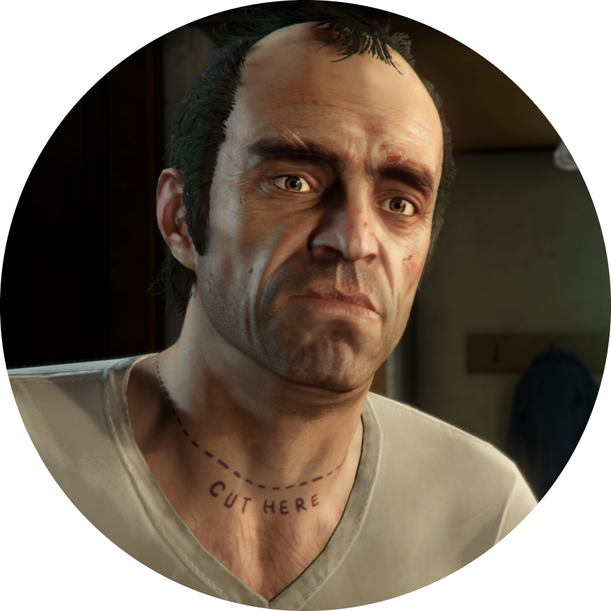

|  |
Trevor PhilipsFounder and CEO of Trevor Philips Enterprises Trevor Philips is a character in the Grand Theft Auto series, appearing as one of the three protagonists of Grand Theft Auto V, along with Michael De Santa and Franklin Clinton, and a main character in Grand Theft Auto Online. He is voiced by Steven Ogg. Trevor is a career criminal and former bank robber with a complicated past, who later founded his own company, Trevor Philips Enterprises. |
Biographical information
| Nationality | Canadian |
| Also known as | Maniac Uncle T Philips Trevor Trev |
| Status | Alive |
| Home | Trailer Zancudo Avenue Sandy Shores,Blaine County |
| Family |
Mrs Philips
Mr. Philips Ryan Philips |
| Main affiliation |
Michael De Santa
Franklin Clinton Ron Jakowski Dave Norton Brad Snider Lester Crest |
| Weapon(s) |
Combat Pistol Assault Shotgun Advance Rifle AK-47 Launcher Minigun |
| Vehicle(s) |
Red Bodhi Black Hot Rod Blazer Red Faggio Black |
| Phone Number | 2735550136 |
| Email address | trev@eyefind.info |
Trevor's skills
| Special | ⭐⭐⭐ | Driving | ⭐⭐ |
| Stamina | ⭐⭐ | Strength | ⭐⭐⭐⭐ |
| Shooting | ⭐⭐⭐⭐⭐ | Lung Capacity | ⭐ |
| Stealth | ⭐⭐⭐ | Flying | ⭐⭐⭐⭐⭐ |
Contents
- Backgroud
- Early criminal life
- Events of GTA 5
- Events of GTA Online
- Ending
1.Background
What is known about Trevor's background comes from his own words. Trevor was born and raised in Canada, near the border with the United States, or, as he calls it, the "Canadian border region of America". In a conversation with Franklin while hanging out, he claims he "grew up in five states, two countries, fourteen different homes, eight fathers, three care homes, two correctional facilities, one beautiful, damaged flower of a mother" and has "served time, my country, your country and myself." Even as a child, he had a history of rage issues and violent impulses that ruined his attempts to fit into society (notably, it is implied that he, in a fit of rage, sodomized his hockey coach with a hockey stick and he implies in a conversation with Cletus that at some point he strangled a clarinet player with his own instrument). Trevor also mentions how he killed various animals and "drifters" even during the early years of his life. Trevor's childhood itself was an unhappy one. His father was physically abusive towards him, as stated in Hang Ten, while his mother was emotionally abusive, overbearing, treated him with condescension and saw him as a "useless boy" who cared little about his mother. When he was a child, Trevor's father abandoned him in a shopping mall, which Trevor later burned down in retaliation. Trevor also had a brother named Ryan, whom Trevor was not fond of. Ryan died in an "accident" prior to 2013.
2.Early criminal life
After being discharged from the military, Trevor became a drifter and committed petty crimes along the border with no particular goal in mind. He admits to Lamar that he never committed any serious crimes until he met Michael Townley in 1993. They first met each other while escorting cargo across the border. Trevor himself claimed that the money he was receiving for the job was good, along with the fact that at the time he did not "know enough to check references." He was waiting on the runway to meet his employer and saw not one, but two dust trails coming up the road, despite the fact that he was told there would be only one person meeting them. Michael exited the first car while a man who Michael previously carjacked exited the other, yelling at them. Trevor shot off a flare gun he was carrying into the second man's eye, killing him. He and Michael both dumped the body into a lake after landing a plane. Trevor stated that going through the turn of events was horrible, as the flare was still burning from the inside of his head as they dropped him off, causing Trevor and Michael to throw up. After the incident, Trevor and Michael became friends and started a criminal partnership together. Trevor's first job involved robbing a place that cashed checks, however, he was caught because the clerk turned out to be someone who knew him, resulting in him serving four months of a six-month sentence. Over time, Michael developed a relationship with and married a stripper named Amanda, eventually having two kids, Tracey and Jimmy. This created some friction between the criminal pair, due to Michael spending more and more time with his new family and less with his criminal activities. Despite this, Trevor began to see himself as an uncle to the couple's children, even vowing to avenge Tracy should anyone 'wrong her'. Over the following years, Michael became more cautious as a criminal, because he saw himself having more to lose should he be imprisoned or killed, which led Trevor to believe Michael was going "soft". Some time later, Trevor met Brad Snider, who would often join Trevor and Michael and commit robberies together, along with a contact named Lester Crest and a few other associates. Michael and Brad did not trust or like each other, but Trevor got along with Brad to a certain degree. Trevor told Brad about his beliefs of Michael going "soft", to which Brad suggested that they cut off Michael and work only with each other. Trevor declined, believing he should stay loyal to Michael.
3.Events of GTA 5
While having sex with Ashley, Trevor learns about the robbery of a jewelry store in Los Santos after a witness quotes a movie phrase that was a favorite of Michael Townley. Understandably shocked after hearing a familiar quote Michael said, he grabs a beer and walks out his trailer to process it only to be confronted by Johnny for having sex with Ashley again. While trying to avoid a confrontation between himself and Johnny by simply walking away, Trevor is pushed to breaking-point as Johnny continues to express his anger at Trevor. Trevor is unable to ignore Johnny's rage anymore and starts making jokes about his meth addiction and mockingly invites him to have sex, joking that this is the reason for the friction between the two men. Johnny lays his guard down and tells Trevor that he still loves Ashley. Trevor then hugs Johnny and starts "consoling" him. Finally, Wade, Ron, and Ashley watch in horror as Trevor finally snaps and suddenly grabs Johnny by the neck and throws him to the ground, followed by smashing his beer bottle against Johnny's face and stomping repeatably on his head, killing him.
4.Events of GTA Online
The GTA Online Protagonist would meet Trevor and Ron after reaching rank 13. A few months prior to the events of Grand Theft Auto V, Ron contacts the Online Protagonist who has been ruining Trevor's businesses and other drug dealers, specifically after stealing an RV full of meth belonging to Trevor for Gerald. The player must meet Trevor at his trailer in Sandy Shores to settle the issue by having the player do jobs for Trevor Philips Industries. Trevor's jobs mainly consist of stealing drugs from rival groups, mainly The Lost MC, while killing the dealers. Jobs details will be sent either from Ron or through Trevor himself. After the Heists Update, Trevor occasionally calls the Online Protagonist to take down rival planes (only for Xbox 360 and PlayStation 3 players). Trevor is later seen planning the fourth heist: Series A Funding. He sends the online players to steal from an unnamed group in the Dignity yacht, the Vagos, The Lost MC, the Ballas and the O'Neil Brothers. After the crew completes all the setup missions, Trevor is at the warehouse, ready to move the product but is informed that the gangs they stole from are coming back for their stolen goods. After Trevor and the crew hold off the gangs, they rush to the El Gordo Lighthouse. Trevor then gives the crew their money in advance and they leave. Trevor stays at the lighthouse and waits for the contact to arrive. When he arrives, it is revealed that the contact is an undercover cop and the whole thing is a sting operation from the DOA. Trevor escapes by jumping off of a cliff into the ocean and swimming to safety. Later on, he angrily smashes his head against a tree before crying uncontrollably.
5.Ending
After the heist, Franklin is given separate orders by Steve Haines and Devin Weston to kill one of his friends. Haines wants him to kill Trevor due to Trevor's unpredictable nature being a liability, while Weston wants him to kill Michael to get revenge for the the death of his lawyer, which Weston blames him for. It is at this point that Franklin can choose whether to kill Michael at Weston's request, kill Trevor at Haines' request, or spare them and team up with them both to kill all of their enemies.